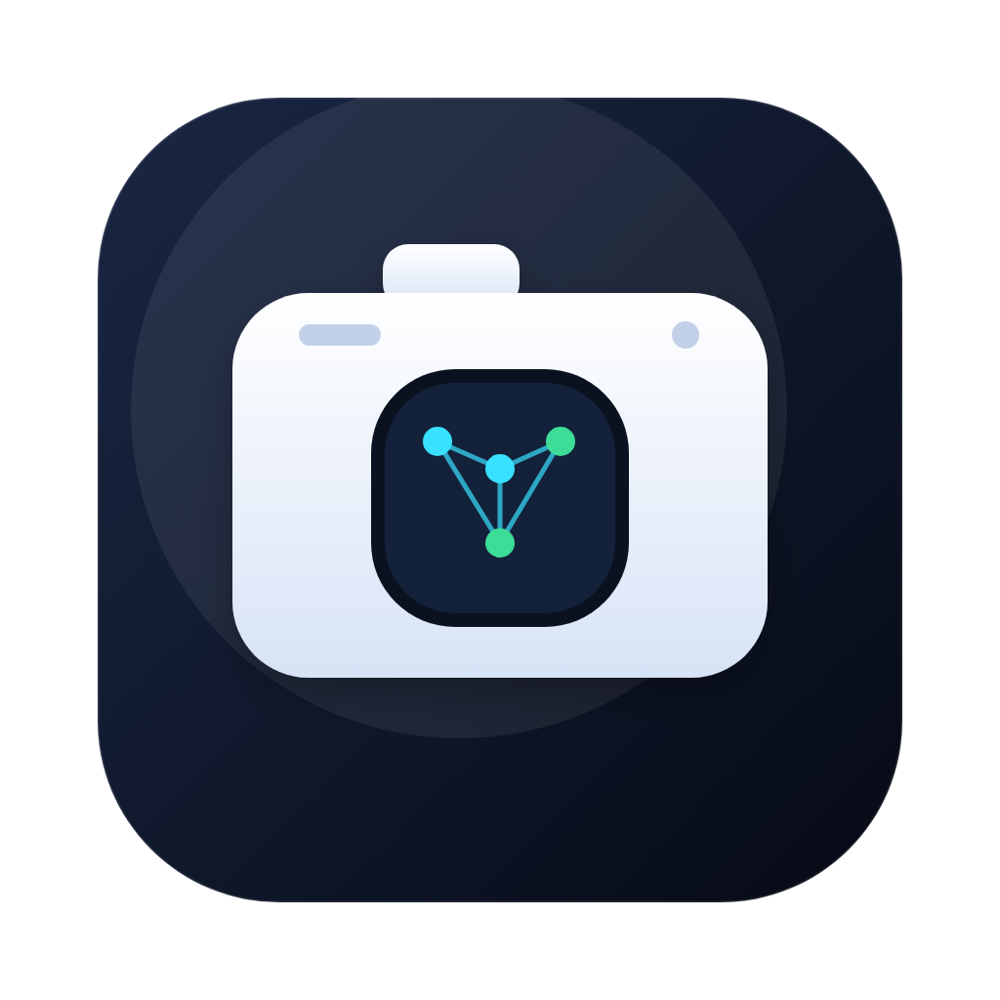
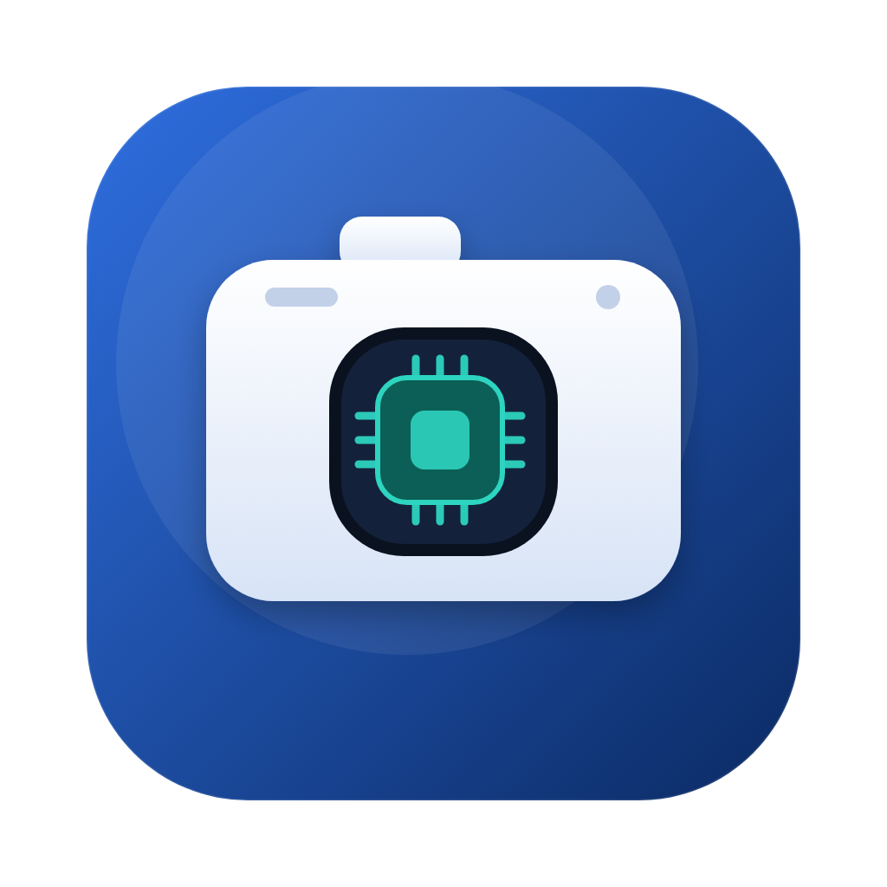
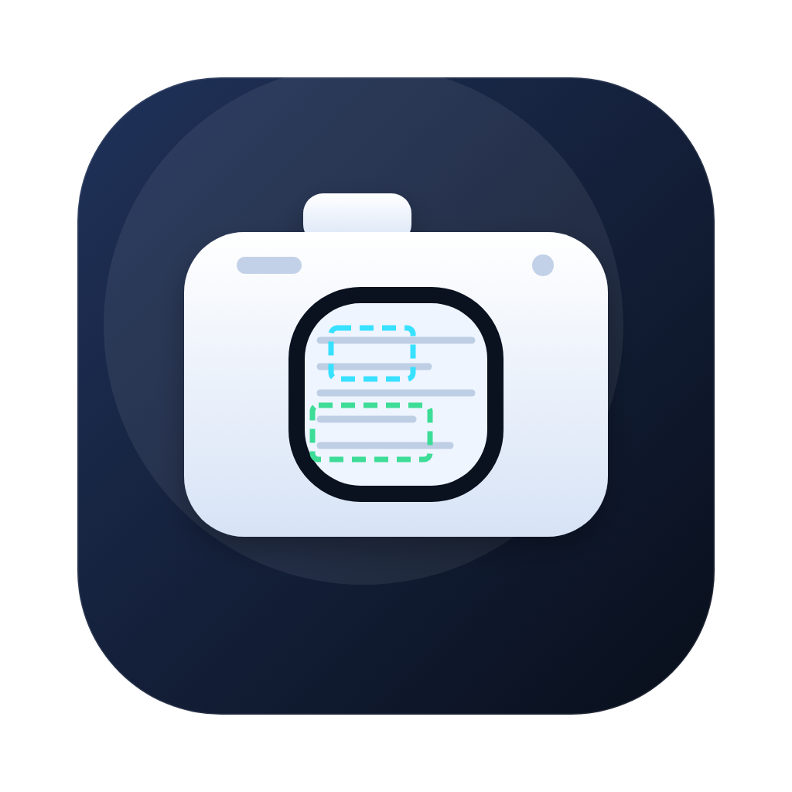
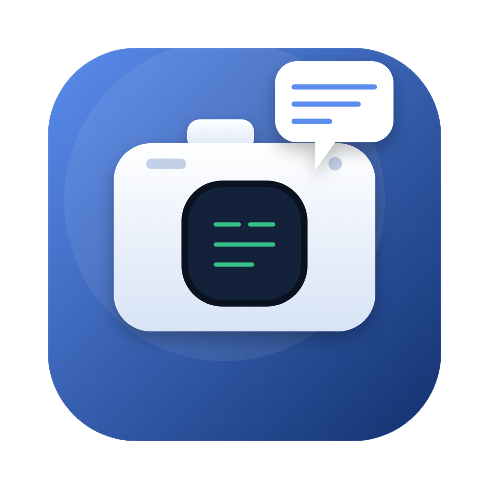
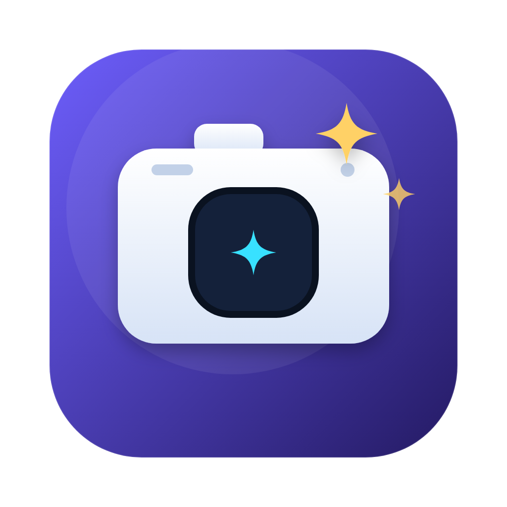
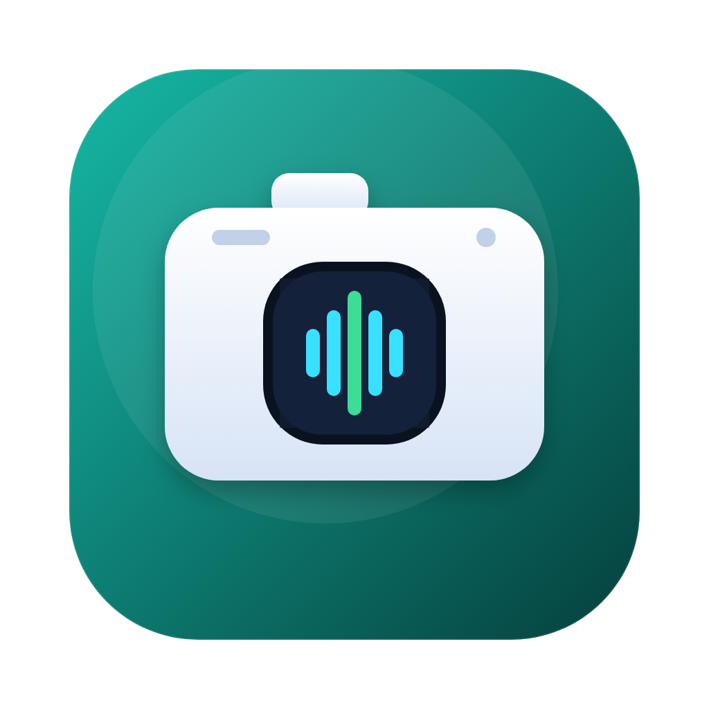
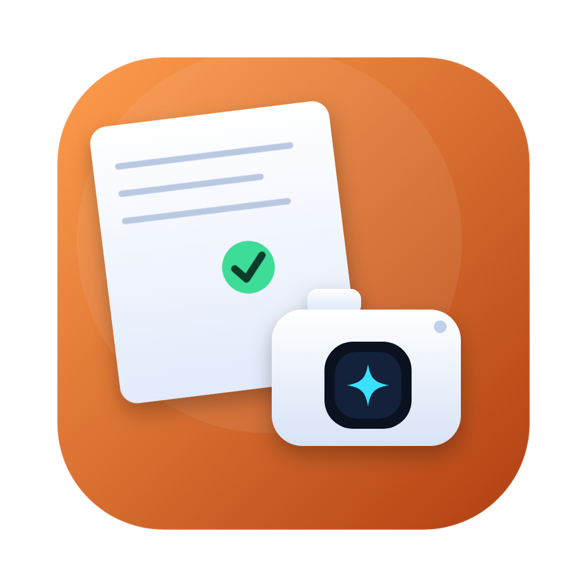
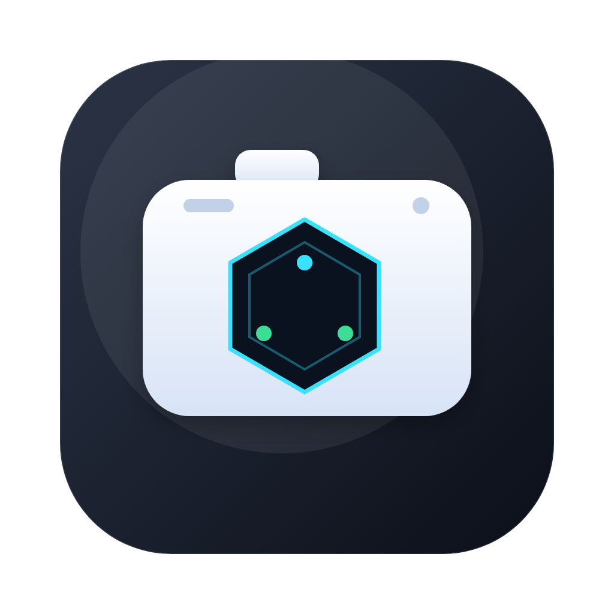
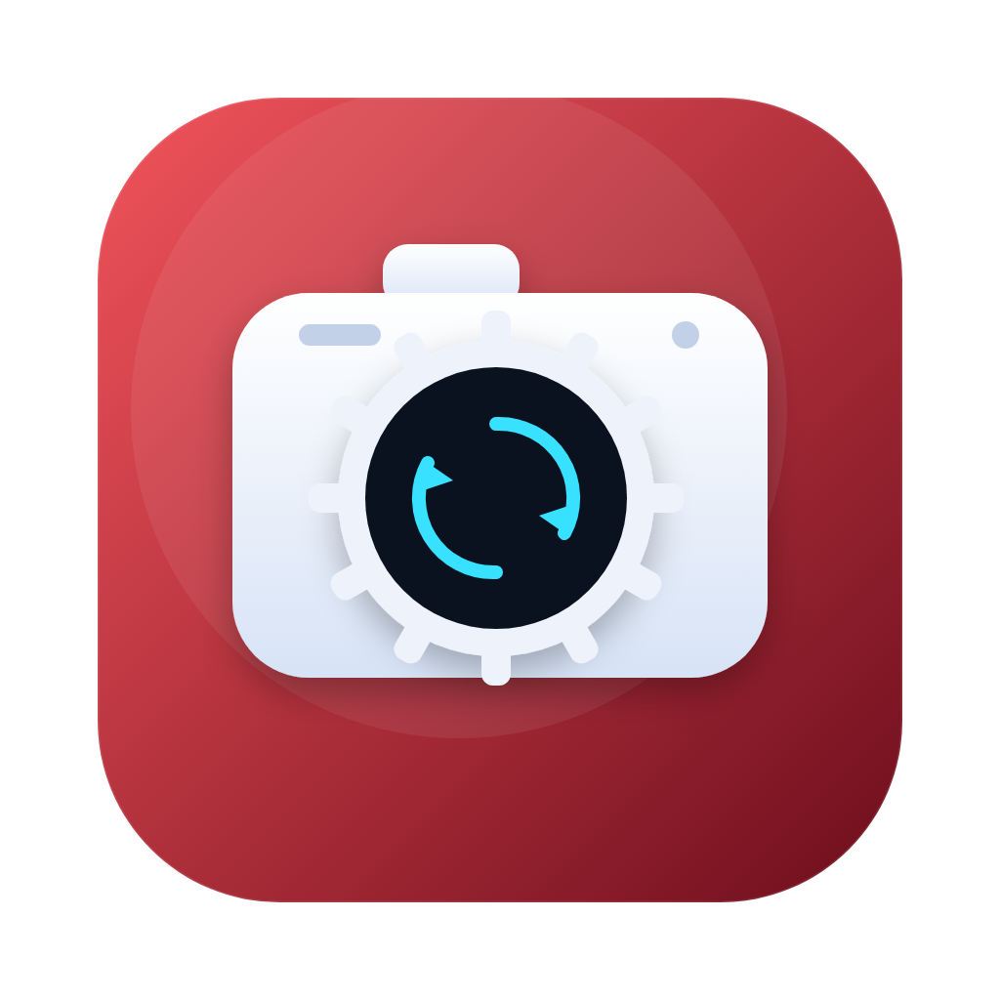
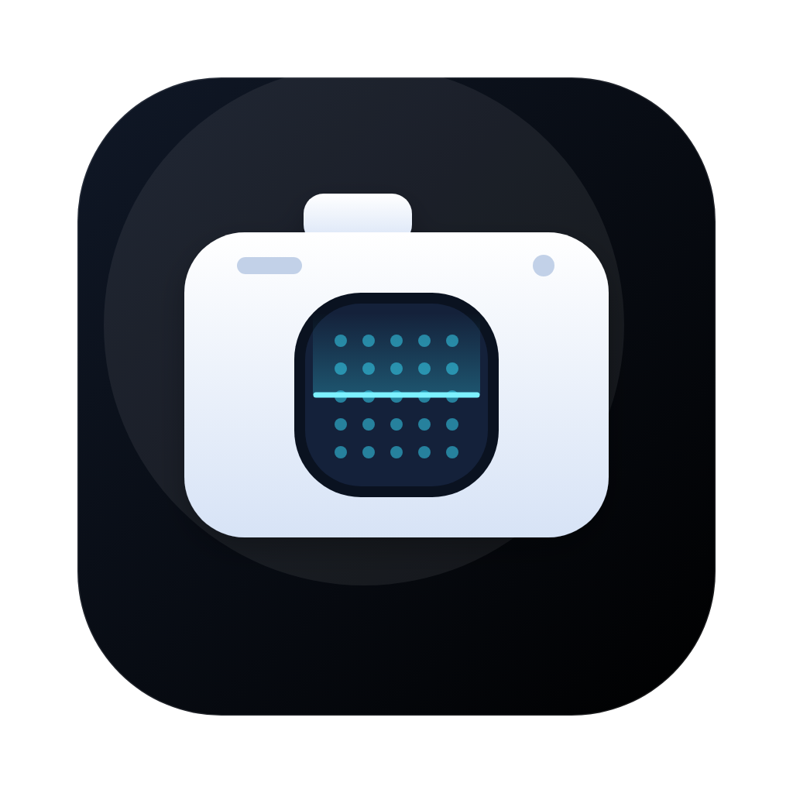

看书宝 · 图标十案 第三组：既是摄像头，也是 AI
统一结构 = 白色相机机身 + 带 AI 语汇的镜头 · 无眼珠/瞳孔/中心点，镜头改成圆角方形或六边形 · macOS 1024×1024 圆角规格

21 相机 · 神经网
镜头里是神经网络节点
深藏青

22 相机 · 芯片
镜头即芯片，端侧算力
宝蓝

23 相机 · 识别框
AI 框选识别作业内容
藏青

24 相机 · 气泡
拍完直接问，回答在气泡里
品牌蓝

25 相机 · 星芒
AI 星标最省笔墨，最耐看
紫

26 相机 · 声波
镜头变成语音波形
青绿

27 拍作业
纸 + 相机 + 批改勾
橙

28 相机 · 六角
六边形科技镜头 + 节点
石墨

29 相机 · 计算
齿轮 + 处理中圆环
赤红

30 相机 · 点阵
点阵网格 + 扫描线
近黑
64px 缩略
看辨识度
21
22
23
24
25
26
27
28
29
30